Each one is shown large and at the sizes a browser tab and a phone home screen use. Tell Claude a number.
Round 2: more like 3 (Bold Mark) and 7 (Synth Sun)
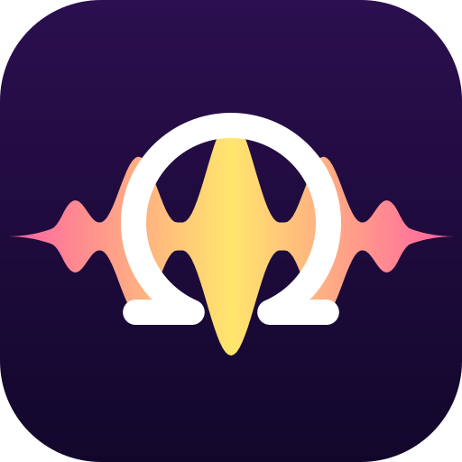
11. Bold SunsetBold Mark in Synth Sun colours: white Ω, wave running yellow to pink. 64 · 32 · 16 px
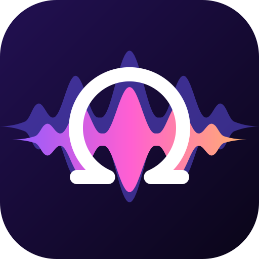
12. Bold LayersBold Mark with two waves, one behind the other, for depth. 64 · 32 · 16 px
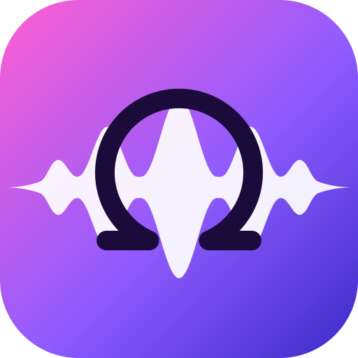
13. Bold ReverseBold Mark turned inside out: a bright tile, a white wave, a dark Ω. 64 · 32 · 16 px
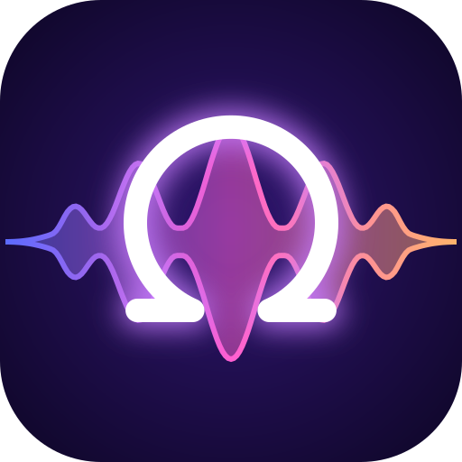
14. Bold GlowBold Mark at night: the Ω glows and the wave has a bright edge. 64 · 32 · 16 px
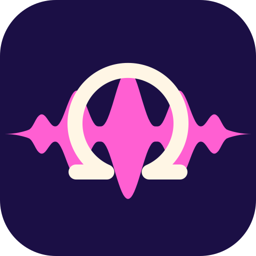
15. Bold StampBold Mark in two flat colours. The simplest one; clearest at 16 px. 64 · 32 · 16 px
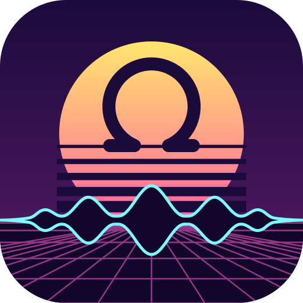
16. Sun GridSynth Sun with the classic grid floor; the wave is the glowing horizon. 64 · 32 · 16 px
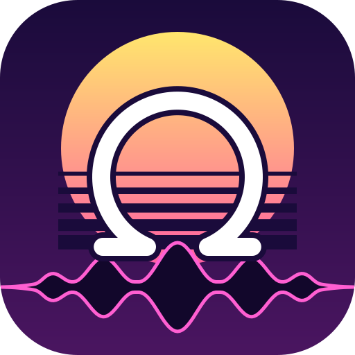
17. Sun MarkBoth of your picks in one: the striped sun behind, the bold white Ω in front. 64 · 32 · 16 px
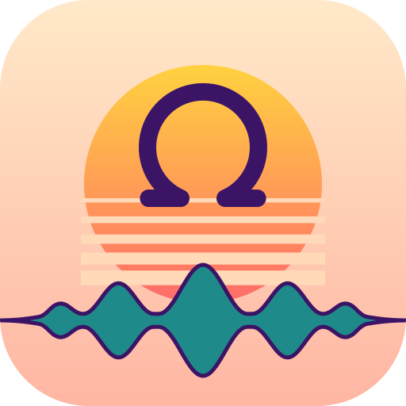
18. Sun DawnSynth Sun in morning colours: peach sky, deep purple Ω, teal wave. 64 · 32 · 16 px
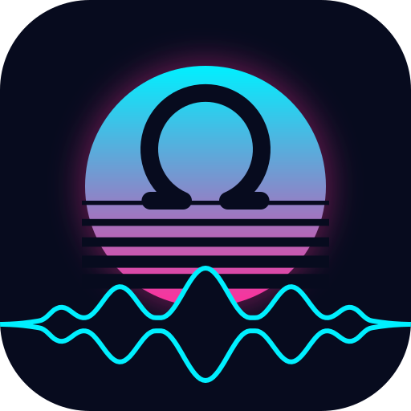
19. Sun NeonSynth Sun in cyan and magenta on near-black, with a soft glow. 64 · 32 · 16 px
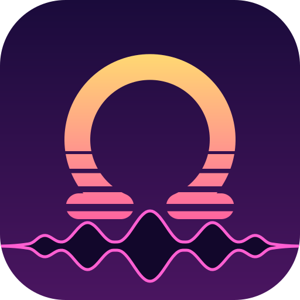
20. Omega SunriseThe Ω is the sun: a bold striped Ω in sunset colours rising over the wave. 64 · 32 · 16 px
Round 1
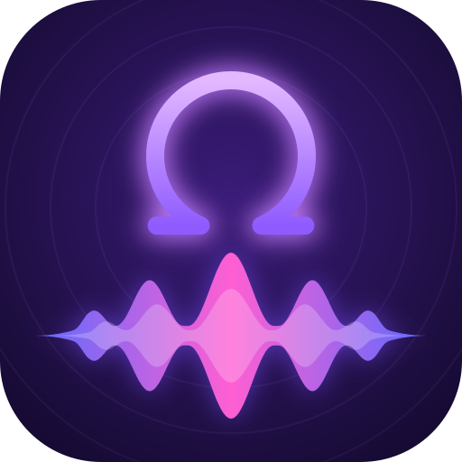
1. Neon OmegaClosest to your example: glowing Ω above a layered wave. 64 · 32 · 16 px
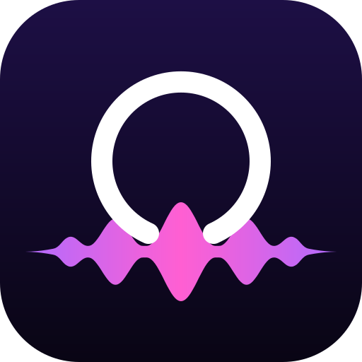
2. Wave FeetThe Ω stands on the sound wave: its feet become the wave. 64 · 32 · 16 px
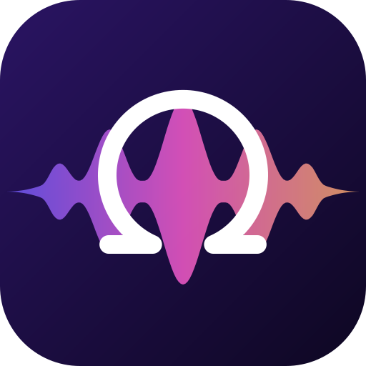
3. Bold MarkSimple and loud: solid Ω in front of a wide wave. Reads well very small. 64 · 32 · 16 px4. Event HorizonBlack-hole look for "Decensus Ad Nihilum": a bright ring of bars around a dark centre. 64 · 32 · 16 px5. Bar OmegaThe Ω itself is drawn with equaliser bars. 64 · 32 · 16 px6. AscensusLight version for "Ascensus ad Incertum": white tile, rainbow wave, dark Ω. 64 · 32 · 16 px
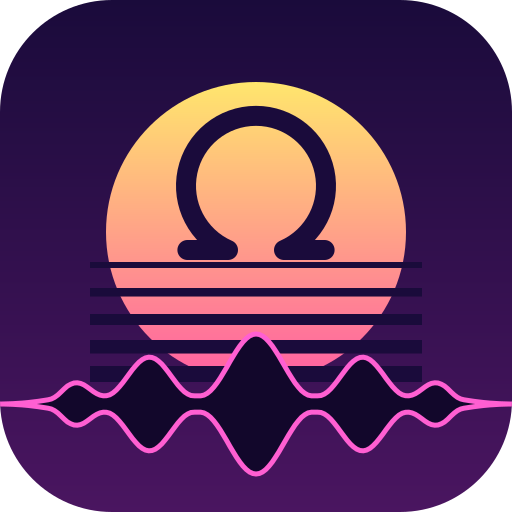
7. Synth SunRetro sunset: the wave is the horizon under a striped sun, Ω in the sun. 64 · 32 · 16 px
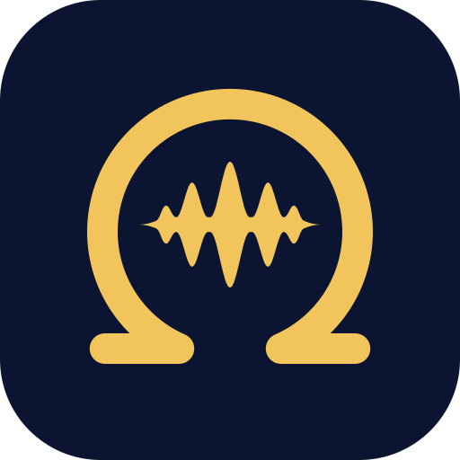
8. MonogramOne colour: a small wave inside a big Ω. Works as a stamp or a monochrome icon. 64 · 32 · 16 px9. HaloA circular visualiser ring around the Ω. 64 · 32 · 16 px
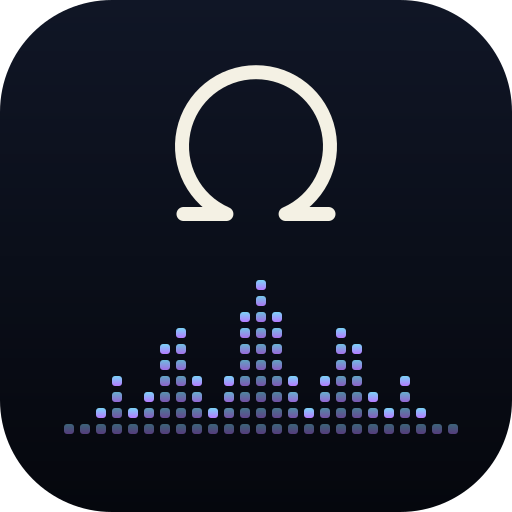
10. Dotted SpectrumDotted bars like the visualiser videos in test-songs, with a thin Ω. 64 · 32 · 16 px